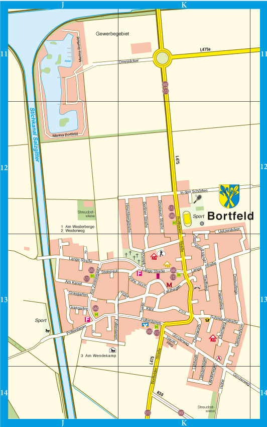

Wir haben nach den Spuren der Globalisierung in unserem Wohnort Bortfeld gesucht. Die wichtigsten Fundorte zeigen wir euch auf dieser Webseite. Dabei haben wir uns bewusst auf die wichtigsten dorfspezifischen Orte und Themen beschränkt. Auf die Effekte der Globalisierung, die sich in jedem Haushalt zeigen oder auch allgemein in Gärten und auf Feldern, gehen wir an dieser Stelle nicht ein.
Bortfeld ist ein kleines Dorf mit 2.641 Einwohnern (Stand: Februar 2021) in Niedersachsen. Es gehört zu der Gemeinde Wendeburg und damit zum Landkreis Peine. Bortfeld liegt direkt am Stichkanal Salzgitter, die Marina Bortfeld liegt nördlich vom Dorfkern an der Mündung des Stichkanals in den Mittellandkanal.
Bortfeld in der Gemeinde Wendeburg:
Eine Karte von Bortfeld:
Zunächst erklären wir kurz, was Globalisierung eigentlich bedeutet.
Wo wir Spuren der Globalisierung gefunden haben, erfahrt ihr auf diesen Seiten: